Grandes betes, predateurs et géants de l'ere des mammiferes
Collection d'illustrations et photographies
Ce recueil presente une collection d'images illustrant les animaux qui ont peuplé la Terre apres l'extinction des dinosaures non-aviens, il y a environ 66 millions d'annees, jusqu'a l'epoque des mammouths et de la megafaune du Pleistocene.
L'ere Cenozoique, souvent appelee "l'Age des Mammiferes", a vu l'emergence et la diversification de formes de vie spectaculaires : des mammiferes geants comme le Paraceratherium (le plus grand mammifere terrestre de tous les temps), des predateurs redoutables comme le Smilodon, et toute une faune de creatures etonnantes qui ont colonisé tous les continents.
Le document est organise en trois grandes periodes geologiques : le Paleogene (66-23 Ma), le Neogene (23-2,6 Ma) et le Pleistocene (2,6 Ma - 11 700 ans), correspondant aux grandes etapes de l'evolution de la megafaune apres le Crétace.
Pour chaque image, la source exacte et la mention de licence sont indiquees. La majorite des illustrations sont des oeuvres de Charles R. Knight (1874-1953) et Heinrich Harder (1858-1935), deux pionniers de la paleoart dont toutes les oeuvres sont dans le domaine public.
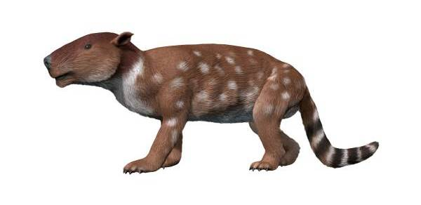
Pantodonte primitif du Paleocene, l'un des premiers grands mammiferes herbivores apres l'extinction des dinosaures. Taille d'un mouton, il represente les debuts de la diversification des mammiferes.
Source : Wikimedia Commons — File:Pantolambda_NT_copy.jpg — Illustration de Nobu Tamura
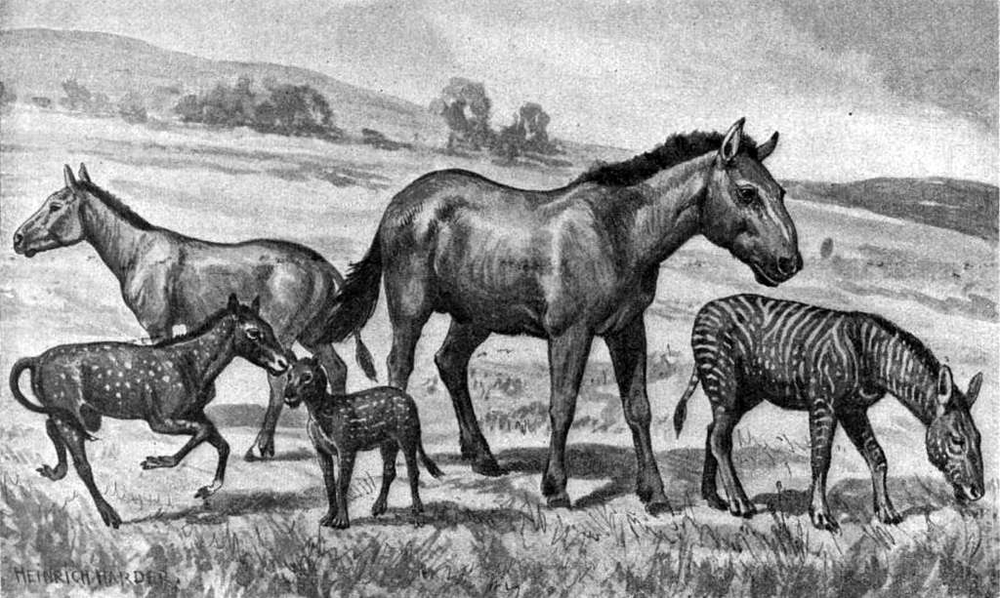
Evolution des equides depuis Eohippus (taille d'un chien, Eocene) jusqu'aux formes plus modernes. Cette illustration historique montre les etapes clefs de l'evolution du cheval.
Source : Picryl — Illustration historique du domaine public
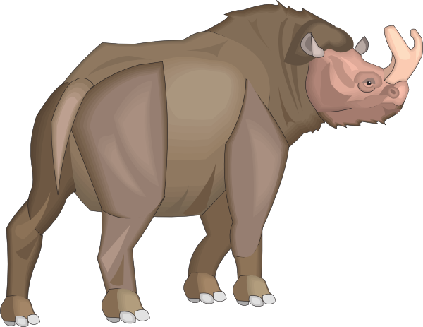
Grand herbivore de l'Eocene ressemblant a un rhinoceros avec une double corne en fourche sur le museau. Pouvant atteindre 2,5 m au garrot, c'etait l'un des plus grands herbivores de son epoque.
Source : clker.com — Clip art vectoriel domaine public
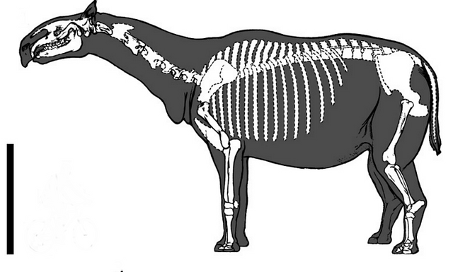
Le plus grand mammifere terrestre connu : 5 m au garrot, 15-20 tonnes. Ce rhinoceros geant sans corne de l'Oligocene etait plus grand que n'importe quel dinosaure terrestre.
Source : Picryl — Reconstitution squelettique du domaine public
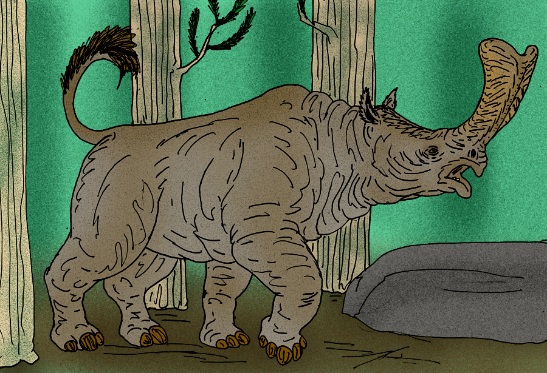
Brontothere de l'Eocene moyen d'Asie, caracterise par une enorme protuberance osseuse sur le museau servant probablement a la resonnance vocale et aux combats intra-specifiques.
Source : Wikimedia Commons — File:Embolotherium_andrewsi.JPG
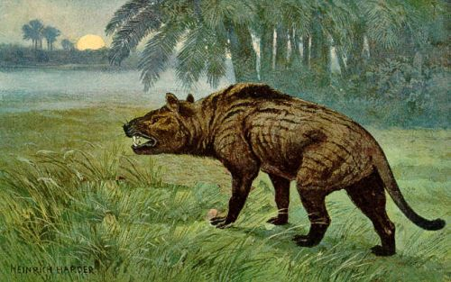
Creodonte geant, l'un des principaux predateurs du Paleogene. Illustration de Heinrich Harder (1858-1935).
Source : Heinrich Harder via Palaeos.com — Domaine public
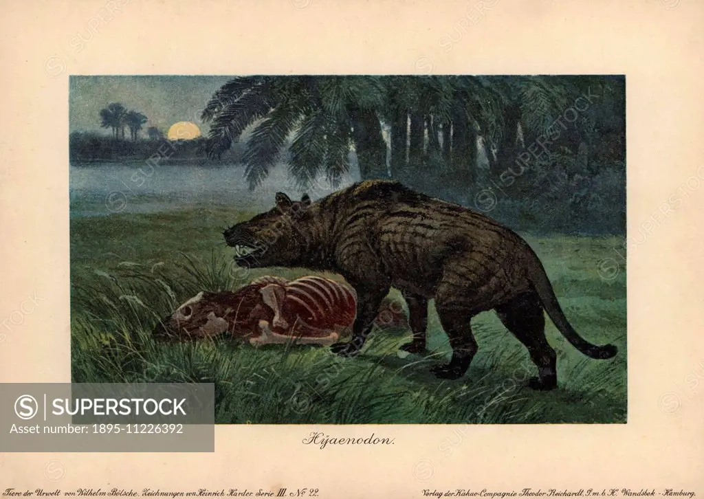
Ces carnivores primitifs dominaient les ecosystemes avant l'arrivee des carnivores modernes.
Source : Heinrich Harder, "Tiere der Urwelt" (1908) — Domaine public
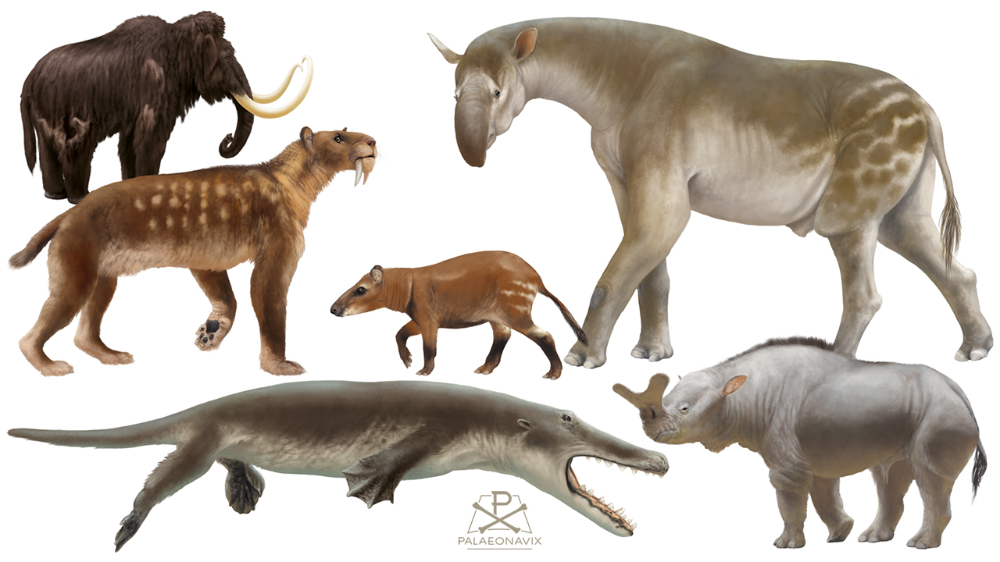
Composition montrant plusieurs representants de la megafaune du Cenozoique : mammouth laineux, Smilodon, ancetre du cheval, Paraceratherium, Basilosaurus et embrithopode.
Source : Palaeonavix.org — Illustration paleontologique educative
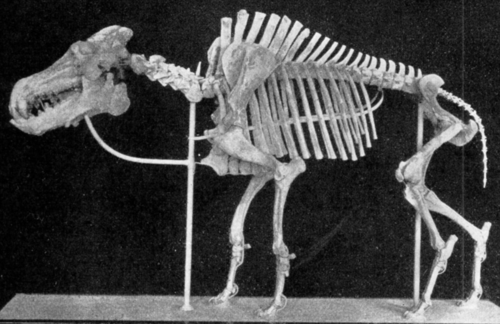
Entelodonte geant de l'Oligocene, surnomme "cochon de l'enfer". Ce predateur/charognard massif pouvait atteindre 2 m au garrot et peser plus d'une tonne. Squelette expose au musee.
Source : Wikimedia Commons — File:Daeodon_skeleton.jpg — Photo de squelette de musee
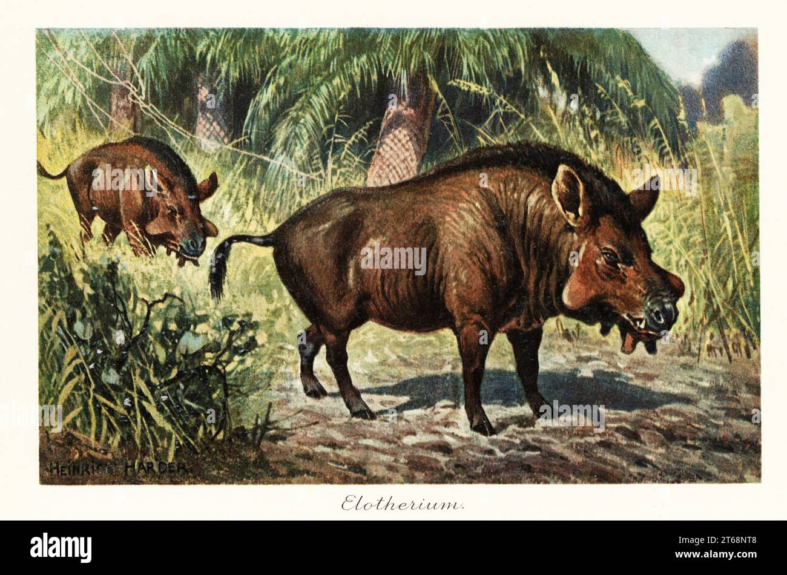
Illustration artistique d'Entelodon, montrant un groupe de ces impressionnants omnivores massifs et agressifs du Miocene. On estime qu'ils chassaient en groupe comme les loups modernes.
Source : Heinrich Harder (1858-1935), "Tiere der Urwelt" (1908) — Domaine public
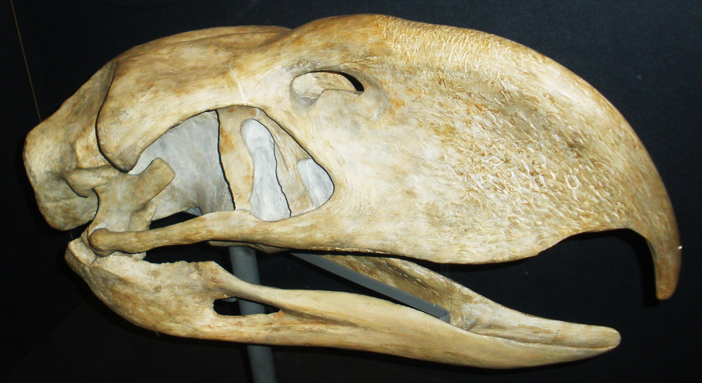
Crane fossilise de l'oiseau-terreur Phorusrhacos, predateur apex de l'Amerique du Sud du Miocene au Pleistocene. Avec un bec puissant et une taille pouvant atteindre 2,5 m, ces oiseaux sans vol dominaient leurs ecosystemes pendant des millions d'annees.
Source : Wikimedia Commons — File:Phorusrhacos_longissimus.JPG — Photo de crane fossile
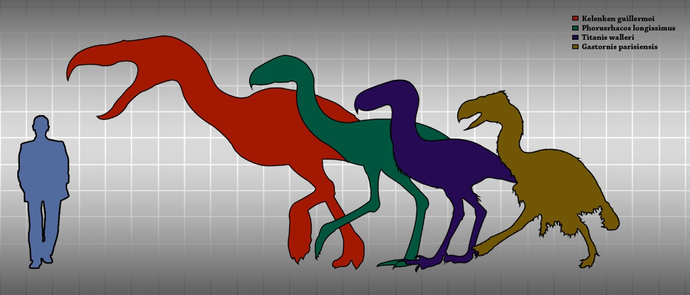
Comparaison en silhouette de quatre oiseaux-terreur geants avec un humain : Kelenken guillermoi (le plus grand), Phorusrhacos longissimus, Titanis walleri (le seul a avoir colonise l'Amerique du Nord), et Gastornis parisiensis du Paleocene.
Source : Wikimedia Commons — File:Terror_birds_and_Gastornis_height_comparison.jpg
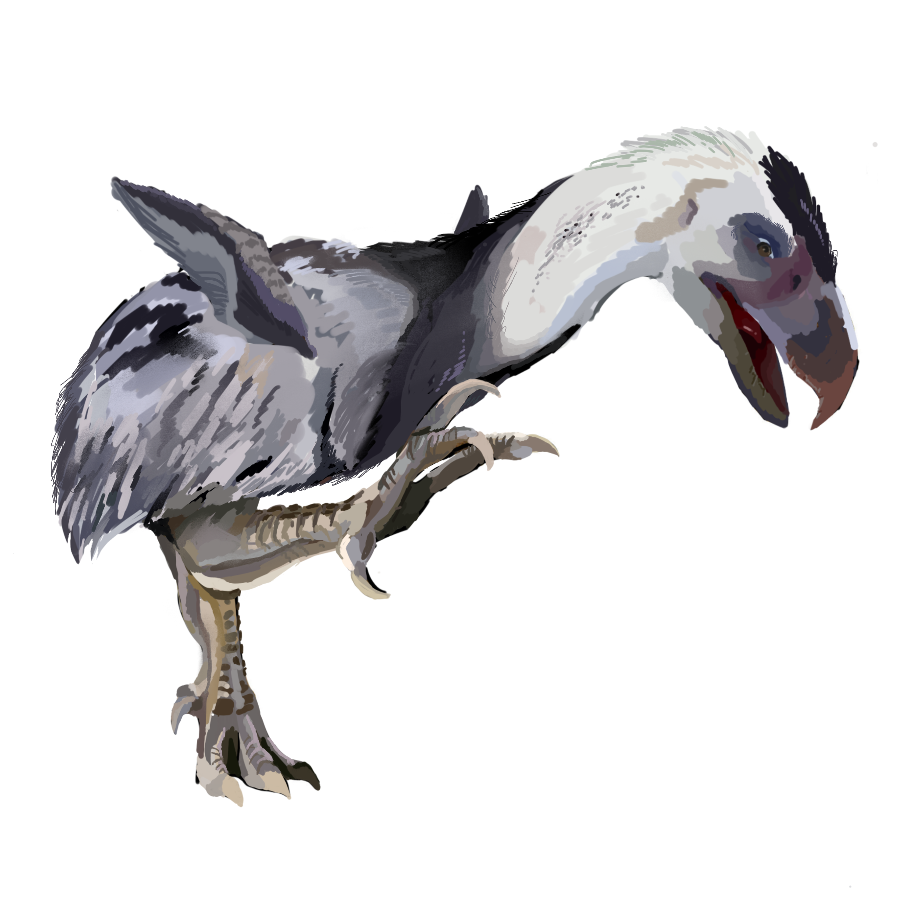
Le seul oiseau-terreur connu a avoir migre en Amerique du Nord (Floride, Texas) il y a environ 5 millions d'annees. Avec ses 2,5 m de haut et ses griffes puissantes, c'etait un redoutable predateur.
Source : Wikimedia Commons — File:Reconstruction_drawing_of_Titanis_walleri.png
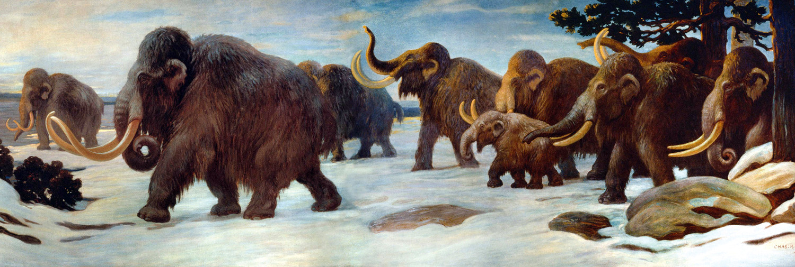
La peinture iconique de Charles R. Knight (1874-1953) montrant un troupeau de mammouths laineux traversant la toundra glaciaire. ~3-4 m au garrot, adapte au froid extreme avec sa longue fourrure et sa couche de graisse. Survecu sur l'ile Wrangel jusqu'a il y a 4 000 ans.
Source : Wikimedia Commons — File:Wooly_Mammoths.jpg — Charles R. Knight (1942)
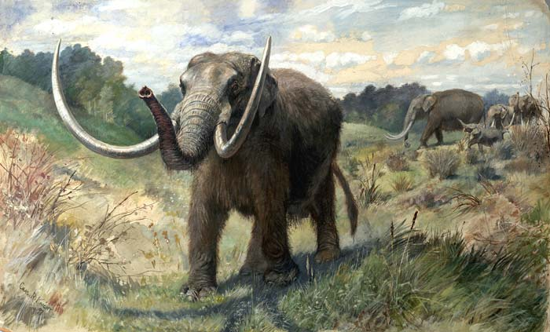
Charles R. Knight represente un mastodonte dans un paysage forestier. Contrairement au mammouth, le mastodonte preferait les forets. Ses defenses droites et sa molaire a cuspides distinctes le differenciaient des elephants modernes.
Source : Wikimedia Commons — File:Knight_Mastodon.jpg — Charles R. Knight
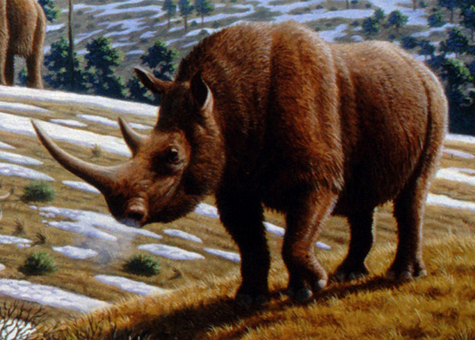
Restauration artistique par Mauricio Antón. Herbivore des steppes froides avec une grande corne frontale.
Source : Wikimedia Commons — Mauricio Antón
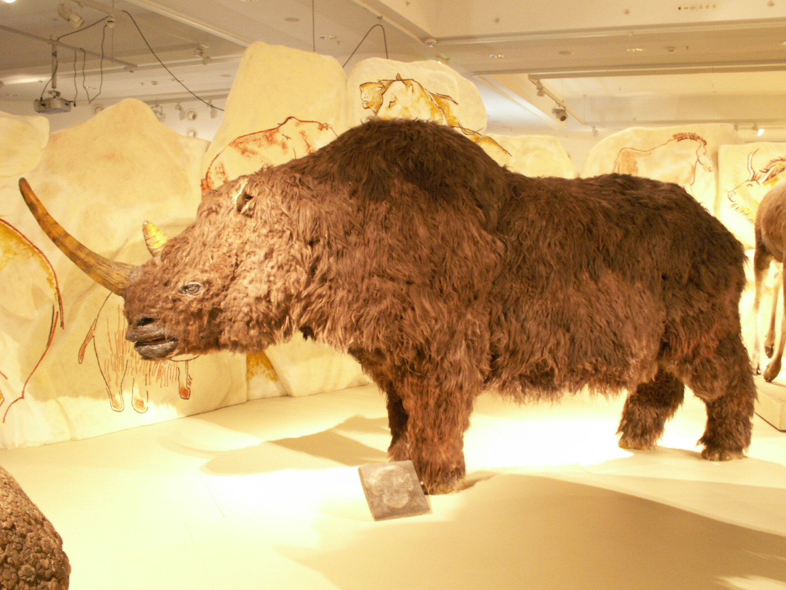
Modele de musee montrant l'aspect impressionnant de cet animal couvert d'un pelage epais adapte au froid.
Source : Wikimedia Commons — File:Woolly_rhinoceros.JPG
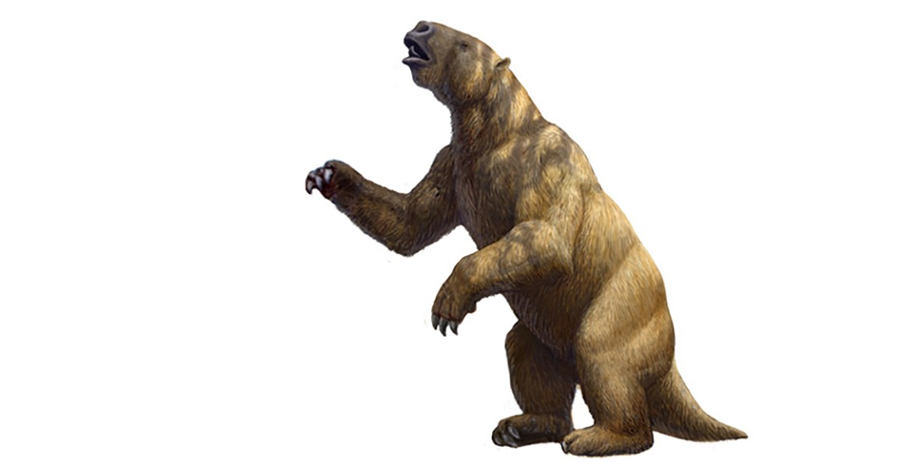
Le plus grand paresseux terrestre connu, pouvant atteindre 6 m debout et peser plusieurs tonnes. Cet herbivore geant d'Amerique du Sud se dressait sur ses pattes arriere pour atteindre les branches hautes.
Source : Natural History Museum, Londres (reproduction sous licence ouverte)
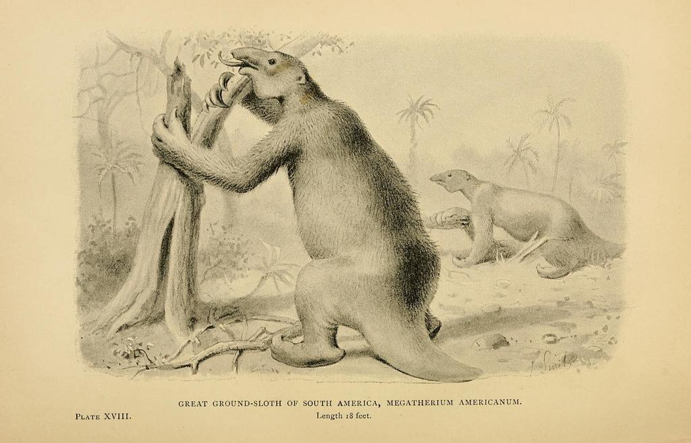
Gravure historique du XIXe siecle montrant un Megatherium se tenant debout contre un arbre pour se nourrir, avec un second individu a l'arriere-plan. Ces illustrations anciennes sont le fruit des premieres reconstitutions scientifiques.
Source : Picryl — Illustration historique du domaine public
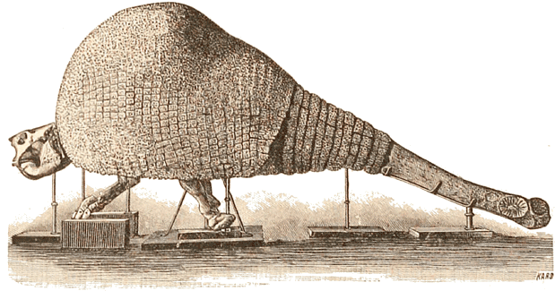
Glyptodont géant d'Amerique du Sud avec une massue caudale osseuse comparable a celle d'un ankylosaure.
Source : Wikimedia Commons — File:Doedicurus.png
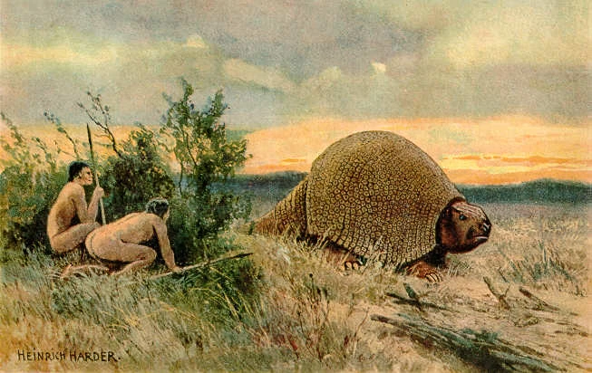
Illustration de Heinrich Harder montrant un Glyptodon observe par des chasseurs paleolithiques.
Source : Heinrich Harder (1858-1935) — Domaine public
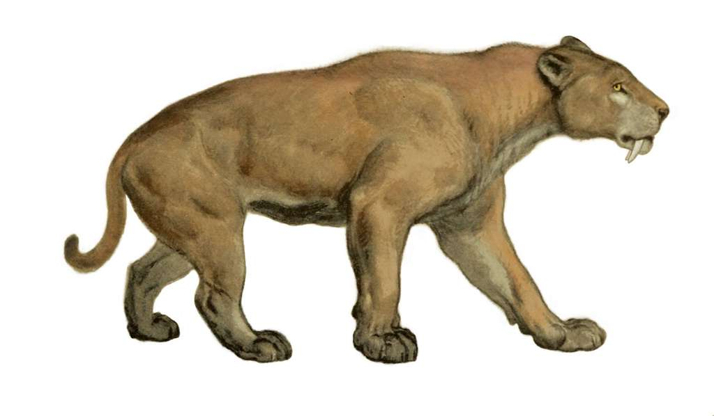
Le celebre tigre a dents de sabre. Ses canines de 20 cm servaient a poignarder les proies.
Source : Picryl — Illustration historique colorisee du domaine public
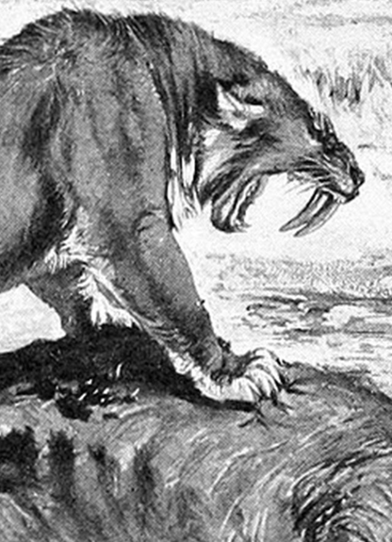
Representation classique du felin a dents de sabre, animal emblematique du Pleistocene americain.
Source : La Brea Tar Pits (fichier de communication public)
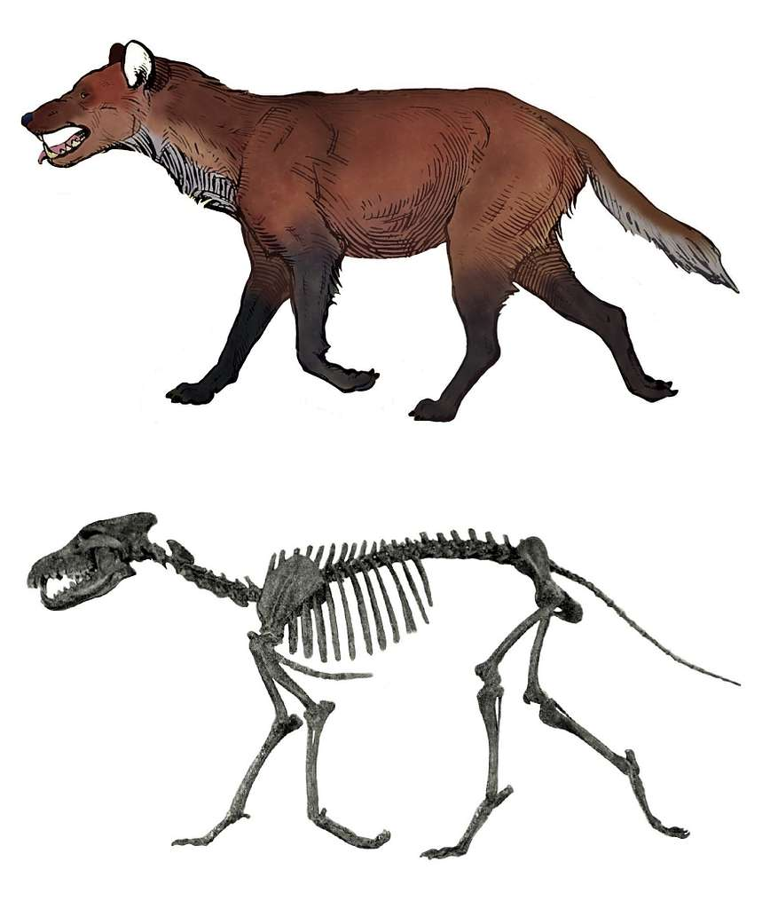
Plus grand et plus robuste que le loup gris moderne, le loup terrible etait un predateur dominant de l'Amerique du Nord pendant le Pleistocene. Son squelette montre une structure plus massive, adaptee a la chasse aux grands herbivores.
Source : Picryl — Illustration et photo de squelette du domaine public
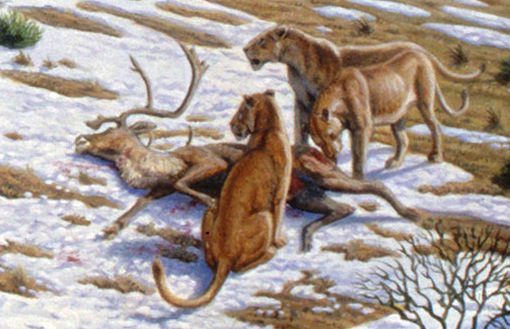
Plus grand que le lion moderne, ce felin peuplait l'Europe glaciaire. Restauration de Mauricio Antón.
Source : Wikimedia Commons — Mauricio Antón
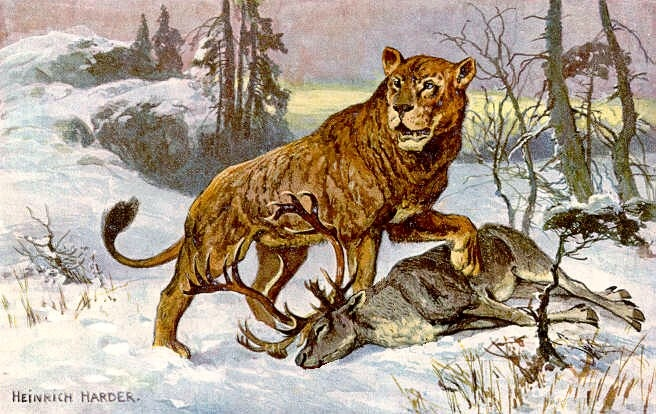
Illustration classique d'un lion des cavernes sur sa proie dans un paysage enneige.
Source : Heinrich Harder (1858-1935) — Domaine public
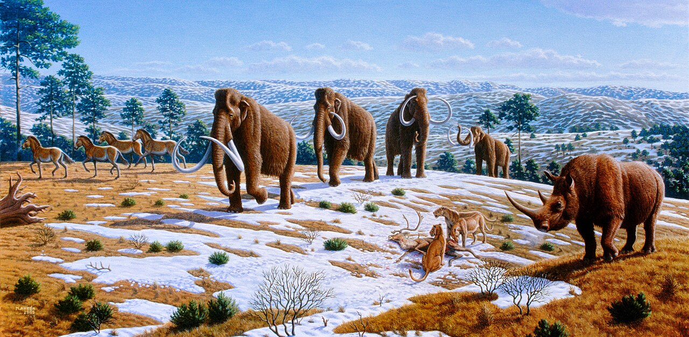
Restauration de paysage pleistocene par Mauricio Antón : mammouths laineux, rhinoceros laineux, chevaux sauvages, bisons, lions des cavernes et renards polaires dans les steppes froides d'Espagne. Un panorama complet de l'ecosysteme de la "steppe aux mammouths".
Source : Wikimedia Commons — Mauricio Antón
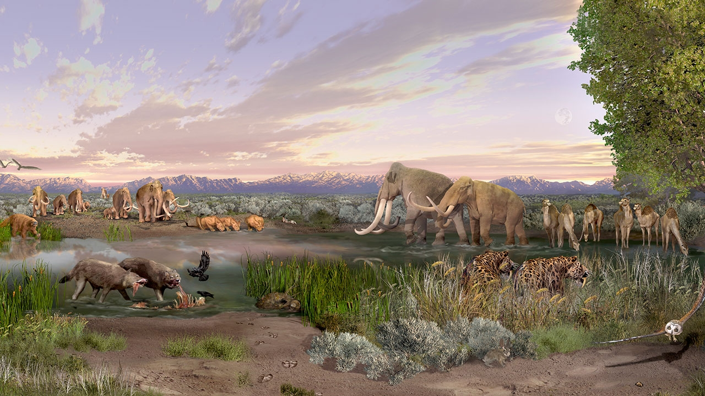
Illustration scientifique realisee pour le National Park Service (USA) montrant la megafaune du Pleistocene superieur en Amerique du Nord : mammouths de Colombie, lions des cavernes, paresseux terrestres, chevaux, chameaux et loups. Oeuvre officielle du gouvernement americain.
Source : Wikimedia Commons — National Park Service (USA) — Domaine public federal